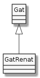
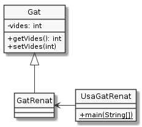

L'herència en Java
Java, com a llenguatge orientat a objectes, implementa el concepte d'herència.

L'herència en Java s'especifica amb la paraula clau extends, de la
següent manera:
1public class GatRenat extends Gat {
2 /*…*/
3}
Java no admet herència múltiple. Cada classe pot ser (i de fet és) només subclasse d'una única classe.
A dalt de tot de la jerarquia de classes es troba la classe Object (la
classe més general)
Per exemple, les següents dues declaracions són equivalents:
1public class Gat {}
1public class Gat extends Object {}
Object aporta una sèrie de característiques a totes les classes de
Java, per exemple, el mètode String toString(). Si consultes la
documentació de la classe Object
hi trobaràs un bon grapat de mètodes, molts d'ells força allunyats del que
hem vist fins ara a aquest curs. No pateixis. Quedat amb que hi són i on
pots trobar la seva descripció.
Però veiem en funcionament l'herència:

En primer lloc, veiem la classe Gat:
1public class Gat {
2 private int vides = 7;
3 public int getVides() { return vides; }
4 public void setVides(int vides) {
5 if (vides < 0) return;
6 this.vides = vides;
7 }
8}
Ara la classe GatRenat aquest cop relacionant-la amb Gat:
1public class GatRenat extends Gat {}
Ha estat breu, oi?
Finalment, veiem com podem usar aquesta nova versió de GatRenat:
1public class UsaGatRenat {
2 public static void main(String[] args){
3 GatRenat renat = new GatRenat();
4 System.out.printf("El gat Renat té %d vides%n", renat.getVides());
5 }
6}
En executar UsaGatRenat ens trobem amb l'habitual:
$ java UsaGatRenat
El gat Renat té 7 vides
Tot i sent habitual, és important que notem que getVides() no ha estat
definit a GatRenat sinó a Gat.
Una simplificació pels exemples
Com sabem, les tres classes de l'exemple anterior han de ser definides en tres fitxers separats que han de tenir com a nom el de la classe. Si bé aquesta és una manera força recomanable de fer, el cert és que no resulta massa pràctic per a presentar-te exemples. Per aquesta raó, et presento una funcionalitat de Java que fins ara no t'havia mostrat: podem posar més d'una classe a un mateix fitxer sempre i quant hi hagi com a molt una de pública.
Considera el següent codi que es troba en un únic fitxer anomenat
UsaGatRenat.java:
1class Gat {
2 private int vides = 7;
3 public int getVides() { return vides; }
4 public void setVides(int vides) {
5 if (vides < 0) return;
6 this.vides = vides;
7 }
8}
9
10class GatRenat extends Gat {}
11
12public class UsaGatRenat {
13 public static void main(String[] args){
14 GatRenat renat = new GatRenat();
15 System.out.printf("El gat Renat té %d vides%n", renat.getVides());
16 }
17}
Com pots veure, el fitxer conté tres declaracions de variables, amb una sola de pública.
Considera la següent interacció:
$ ls
UsaGatRenat.java
$ javac UsaGatRenat.java
$ ls
Gat.class GatRenat.class UsaGatRenat.class UsaGatRenat.java
$ java UsaGatRenat
Abans de crear un Gat Renat
Neix un Gat
Neix un Gat Renat
Un cop creat un Gat Renat
Fixa't que, malgrat només hi ha un .java, en compilar-lo, Java en
genera tres fitxers .class, un per cada classe definida a
UsaGatRenat.java.
També pots veure que el resultat de l'execució és el mateix que quan cada classe tenia el seu propi fitxer.
Donat que encara no coneixem massa bé quines repercusions té el fet que dues de les classes no siguin marcades com a públiques, de moment la versió d'un sol fitxer i la de tres ens resulten equivalents.